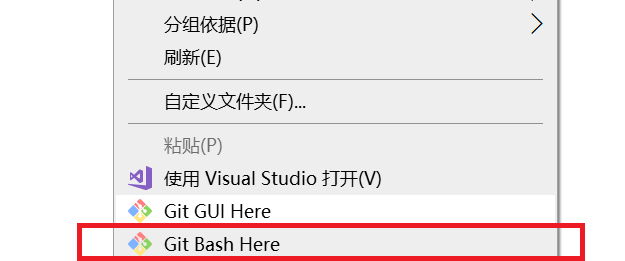
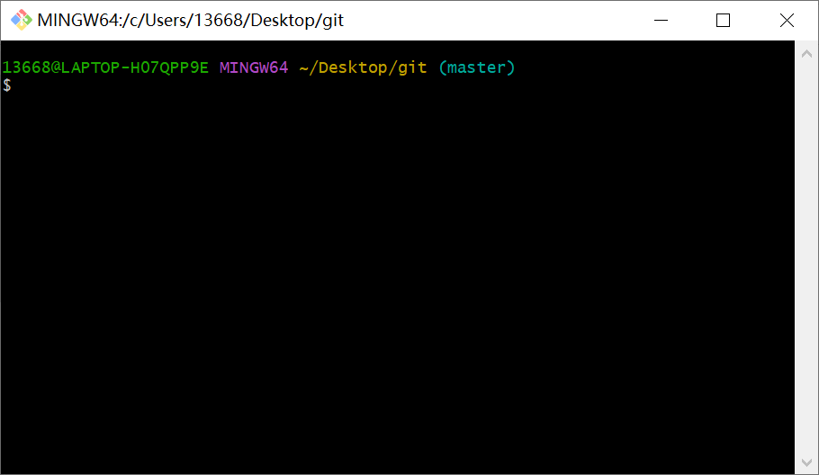
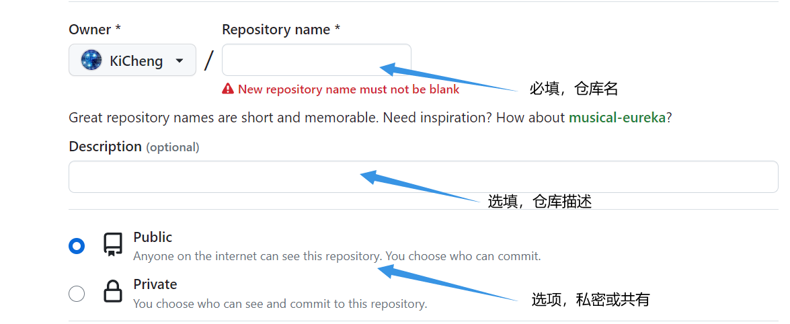
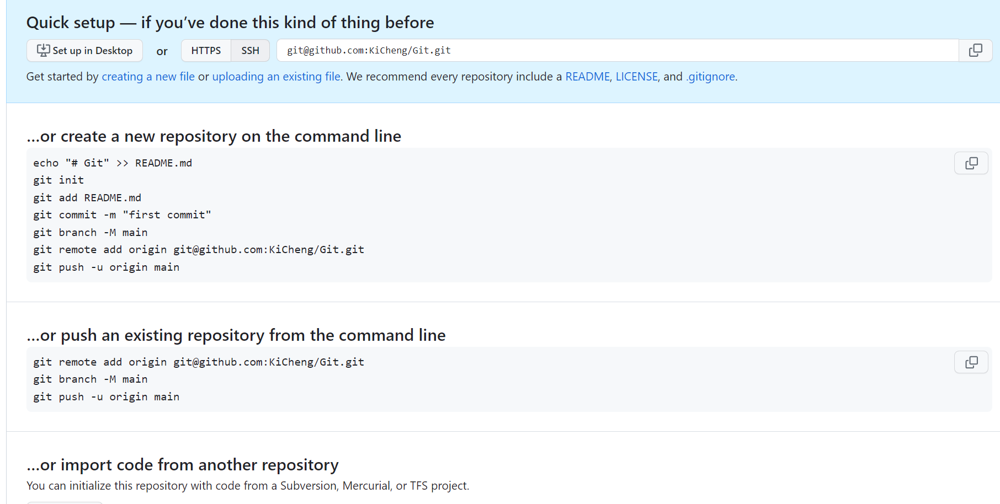
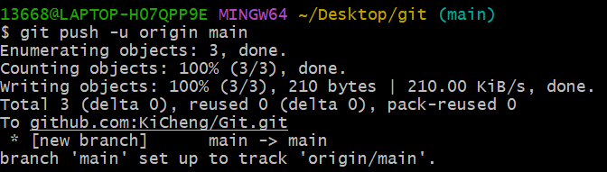
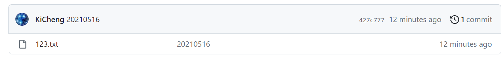
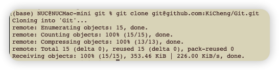

利用Git实现多台电脑同步工作
去年新买了一台mac台式机放在宿舍，就不用每天回到宿舍还要把笔记本插上各种线再启动了。有时候在外面写的代码想要回到宿舍继续用台式机写，所以我需要在两台电脑之间实现无缝协作，即需求：两台电脑里同一个文件夹的内容可以相互同步。
首先说一下，我下面总结的只是我使用git的一个小应用，git的功能强大作用远远不止这些，更多的功能仍然等待着去挖掘呢。
安装Git：下载地址 https://git-scm.com/download ，安装一路点next即可。

构建本地仓库
1、在本地建立一个目录，在该目录里防止需要同步的文件。
2、在当前目录下打开git控制台
界面为：
3、初始化本地仓库
1 | git init |
输出Initialized empty Git repository in C:/Users/13668/Desktop/git/.git/ 即成功。
4、Add文件到暂存区
1 | git add . |
上述命令是添加所有文件到暂存区，但不包含已删除的。或者使用git add xxx(文件名)来添加指定文件。
5、commit文件到本地仓库
1 | git commit -m "提交注释" |
提交注释为本次提交的说明，这里我直接使用提交的日期作为提交注释。
将本地仓库推送到github上
1、在github上创建新仓库

2、将本地仓库与远程仓库关联
一个新建的空仓库会有一个提示页面，对应不同情况的操作命令。我们现在已经创建好本地仓库，需要做的就是将本地仓库推送到远程，也就是情况2。直接复制提示页面给出的命令即可。

添加远程仓库
1
git remote add origin git@github.com:KiCheng/Git.git

可以通过如下命令查看与本地仓库关联的远程仓库：
1
git remote -v
输出如下：
origin git@github.com:KiCheng/Git.git (fetch)
origin git@github.com:KiCheng/Git.git (push)删除与远程仓库的关联：
1
git remote rm origin
推送到远程
1
2git branch -M main
git push -u origin main再次刷新github中的仓库，本地仓库的内容已经推送到远程了。

将远程仓库clone到本地
在另一台安装好了git的电脑上，在文件夹目录下打开git控制台。输入如下代码：
1 | git clone git@github.com:账户名/仓库名.git |
将上述替换成自己的github账户名和仓库名：

这就说明clone成功了，在当前文件夹就可以找到远程备份的文件了。